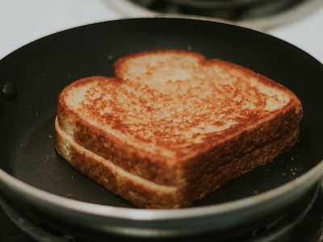

A simple recipe for a grilled cheese sandwich.
Serves: 1 | Prep time: 3 minutes | Cook time: 8 minutes
Ingredients
- 2 slices of bread
- 2 slices of cheese
- 1 tablespoon butter
Instructions
- Heat skillet to low heat.
- Put butter on one side of each slice of bread.
- Place one slice of bread with butter down in the skillet.
- Add cheese and place the second slice of bread on top.
- Cook over low-medium heat until the bottom is golden brown.
- Flip sandwich and cook until the othe side is golden brown and cheese is melted.